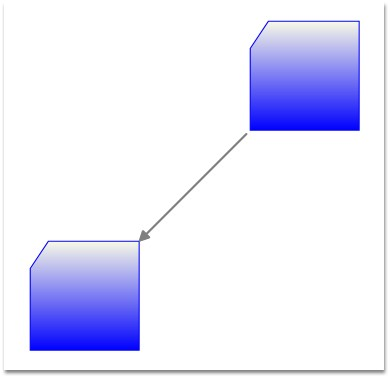

We can create connections between nodes through a model. The Line Connector class is used to create the connection. We need to specify the head node and the tail node for the connection.
|
[C#]
Node n1 = new Node(); n1.Shape = Shapes.FlowChart_Card; diagramModel.Nodes.Add(n1); n1.OffsetX = 50; n1.OffsetY = 50;
Node n2 = new Node(); n2.Shape = Shapes.FlowChart_Delay; diagramModel.Nodes.Add(n2); n2.OffsetX = 150; n2.OffsetY = 250;
LineConnector l1 = new LineConnector(); l1.HeadNode = n1; l1.TailNode = n2; diagramModel.Connections.Add(l1); |
|
[VB]
Dim n1 As New Node() n1.Shape = Shapes.FlowChart_Card diagramModel.Nodes.Add(n1) n1.OffsetX = 50 n1.OffsetY = 50
Dim n2 As New Node() n2.Shape = Shapes.FlowChart_Delay diagramModel.Nodes.Add(n2) n2.OffsetX = 150 n2.OffsetY = 250
Dim l1 As New LineConnector() l1.HeadNode = n1 l1.TailNode = n2 diagramModel.Connections.Add(l1) |
This creates a connection between the two specified nodes.

Figure 53: Line Connector
 Note: For orthogonal and Bezier connectors, the
connection always happens at the center of the node's edge.
Note: For orthogonal and Bezier connectors, the
connection always happens at the center of the node's edge.
For straight line connectors, the connection happens at the intersection point of the edge and the line connector.